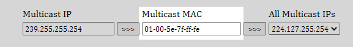

WiFi
SITCore line of products includes native support for the Microchip ATWINC1500 series of WiFi modules. These modules are available pre-certified from FCC, CE, and other regulatory agencies. For added security, WiFi module communication is handled through SPI, not through AT commands.
Important
To take security to the next level, all network cryptography and security are done internally inside SITCore and not inside the WiFi module, meaning the data going over SPI is all encrypted and secure.
Supported Modules
ATWINC1500 & 1510 both work identically with SITCore, except the 1510 has more memory that SITCore doesn't need. The part number with the correct firmware that has been tested with TinyCLR is ATWINC1500-MR210PB. A module with a different firmware version can still be used, but a firmware update becomes necessary. Using the exact version eliminates the need for this step.
Sample Code
The sample code is meant for the FEZ Portal with it's built in WiFi module. If you want to use a bare ATWINC1500 module instead, you'll need to connect interrupt, reset, and chip select lines in addition to the SPI lines (MOSI, MISO, SCK). The user can overide the WiFi built-in MAC address, but not recommended.
Important
If using WiFi 7 click module, there is an enable pin which needs to be pulled high.
Tip
Needed NuGets: GHIElectronics.TinyCLR.Core, GHIElectronics.TinyCLR.Devices.Gpio, GHIElectronics.TinyCLR.Devices.Network, GHIElectronics.TinyCLR.Devices.Spi, GHIElectronics.TinyCLR.Devices.Uart, GHIElectronics.TinyCLR.Native, GHIElectronics.TinyCLR.Networking, and GHIElectronics.TinyCLR.Pins.
using GHIElectronics.TinyCLR.Devices.Gpio;
using GHIElectronics.TinyCLR.Devices.Network;
using GHIElectronics.TinyCLR.Devices.Spi;
using GHIElectronics.TinyCLR.Pins;
using System;
using System.Diagnostics;
using System.Net;
using System.Threading;
var enablePinNumber = SC20260.GpioPin.PA8;
var chipSelectPinNumber = SC20260.GpioPin.PA6;
var irqPinNumber = SC20260.GpioPin.PF10;
var resetPinNumber = SC20260.GpioPin.PC3;
var spiControllerName = SC20260.SpiBus.Spi3;
var gpioControllerName = SC20260.GpioPin.Id;
var enablePin = GpioController.GetDefault().OpenPin(enablePinNumber);
enablePin.SetDriveMode(GpioPinDriveMode.Output);
enablePin.Write(GpioPinValue.High);
SpiNetworkCommunicationInterfaceSettings netInterfaceSettings =
new SpiNetworkCommunicationInterfaceSettings();
var chipselect = GpioController.GetDefault().OpenPin(chipSelectPinNumber);
var settings = new SpiConnectionSettings() {
ChipSelectLine = chipselect,
ClockFrequency = 4000000,
Mode = SpiMode.Mode0,
ChipSelectType = SpiChipSelectType.Gpio,
ChipSelectHoldTime = TimeSpan.FromTicks(10),
ChipSelectSetupTime = TimeSpan.FromTicks(10)
};
// netInterfaceSettings
netInterfaceSettings.SpiApiName = spiControllerName;
netInterfaceSettings.SpiSettings = settings;
netInterfaceSettings.GpioApiName = gpioControllerName;
netInterfaceSettings.InterruptPin = GpioController.GetDefault().OpenPin(irqPinNumber);
netInterfaceSettings.InterruptEdge = GpioPinEdge.FallingEdge;
netInterfaceSettings.InterruptDriveMode = GpioPinDriveMode.InputPullUp;
netInterfaceSettings.ResetPin = GpioController.GetDefault().OpenPin(resetPinNumber);
netInterfaceSettings.ResetActiveState = GpioPinValue.Low;
// Wifi setting
var wifiSettings = new WiFiNetworkInterfaceSettings() {
Ssid = "Your SSID",
Password = "Your Password",
};
wifiSettings.DhcpEnable = true;
wifiSettings.DynamicDnsEnable = true;
var networkController = NetworkController.FromName(SC20260.NetworkController.ATWinc15x0);
networkController.SetInterfaceSettings(wifiSettings);
networkController.SetCommunicationInterfaceSettings(netInterfaceSettings);
networkController.SetAsDefaultController();
networkController.NetworkAddressChanged += NetworkController_NetworkAddressChanged;
networkController.NetworkLinkConnectedChanged +=
NetworkController_NetworkLinkConnectedChanged;
networkController.Enable();
// Network is ready to use
Thread.Sleep(Timeout.Infinite);
void NetworkController_NetworkLinkConnectedChanged
(NetworkController sender, NetworkLinkConnectedChangedEventArgs e) {
// Raise event connect/disconnect
}
void NetworkController_NetworkAddressChanged
(NetworkController sender, NetworkAddressChangedEventArgs e) {
var ipProperties = sender.GetIPProperties();
var address = ipProperties.Address.GetAddressBytes();
Debug.WriteLine("IP: " + address[0] + "." + address[1] + "." + address[2] +
"." + address[3]);
}
WINC1500 Utilities
The Winc15x0Interface class provides to access some of the native functions of the WINC1500 WiFi module. Such as getting the WiFi module's MAC address, getting RSSI (Relative Signal Strength Indicator), scanning for access points, checking the firmware version, and over-the-air (OTA) firmware update.
Tip
Needed NuGets: GHIElectronics.TinyCLR.Drivers.Microchip.Winc15x0 SetCommunicationInterfaceSettings function needs to be called before using this driver.
//Initialize the WiFi interface first before using any of the below functions... SetCommunicationInterfaceSettings
// ...
//Scan for WiFi access points:
string[] ssidList = Winc15x0Interface.Scan();
//Get Relative Signal Strength Indicator for the connected access point:
int signalStrength = Winc15x0Interface.GetRssi();
//Get the WiFi module's MAC address:
byte[] macAddress = Winc15x0Interface.GetMacAddress();
//Get the version of the installed WiFi firmware:
string fwVersion = Winc15x0Interface.GetFirmwareVersion();
//Print a list of WiFi firmware versions that have been tested with TinyCLR OS.
// Note: Untested WiFi firmware versions may also work.
for (int i = 0; i < Winc15x0Interface.FirmwareSupports.Length; i++) {
System.Diagnostics.Debug.WriteLine("Supported firmware version #" +
(i + 1).ToString() + ": " + Winc15x0Interface.FirmwareSupports[i].ToString());
}
//Download and install firmware from an OTA download (web) server:
// Must upload firmware file to root folder in server
// (e.g. http://192.168.0.100/m2m_ota_3a0.bin).
bool otaUpdate = Winc15x0Interface.FirmwareUpdate("http://192.168.0.100/m2m_ota_3a0.bin", TimeSpan.FromMilliseconds(5000));
Multicast IP
Multicast works as expected on all other network interfaces; however, in order to achieve this on WiFi, we need to convert a Multicast IP to a multicast MAC Address. Any online tool like this can be used.
This capture shows Multicast IP address 239.255.255.254 for example.

This Multicast MAC address is then used as below.
Winc15x0Interface.AddMulticastMacAddress(new byte[] { 0x01, 0x00, 0x5e, 0x7f, 0xff, 0xfe });
If more than one Multicast MAC address is needed, just call AddMulticastMacAddress multiple time.
There is also an API allows remove multicast mac address from the list as well.
Winc15x0Interface.RemoveMulticastMacAddress(new byte[] { 0x01, 0x00, 0x5e, 0x7f, 0xff, 0xfe });
Tip
Needed NuGets: GHIElectronics.TinyCLR.Drivers.Microchip.Winc15x0
AccessPoint
SITCore devices can be set up as a WiFi AccessPoint. This creates a 1-to-1 connection between SITCore and other hardware devices through WiFi without the need to connect to a switch. An example might be, connecting a phone directly to the SITCore hardware. This may be necessary in some situations where access to a network isn't possible and a user needs to connect to the device directly.
Tip
AccessPoint only supports connecting to one device at a time.
Setting up a device as an access point works just like the default Station mode except the Ssid and now the one the device is broadcasting.
var networkInterfaceSetting = new WiFiNetworkInterfaceSettings() {
Ssid = "Your SSID",
Password = "Your Password",
Mode = WiFiMode.AccessPoint,
};
Tip
Only WEP password security is supported. Do not set the Password for an open network.
AccessPoint can provide an IP address to the connected device when networkInterfaceSetting.DhcpEnabled = true; through a simple internal DHCP server. If desired, an event is triggered on completion.
WiFiNetworkInterfaceSettings wifiSettings = new WiFiNetworkInterfaceSettings() {
Ssid = "Your SSID",
Password = "Your Password",
};
//...
WiFiNetworkInterfaceSettings wifiSettings.AccessPointClientConnectionChanged += (a, b, c) => {
Debug.WriteLine("Provided IP = " + b.ToString());
Debug.WriteLine("Connected device's MAC Address = " + c);
};
The usual connection event is fired just like in Station mode, except in this case it is fired when an external device is connected NetworkController.NetworkLinkConnectedChanged.